連線進入 VM ( windows )
總共有3種方法可以進入 VM 本篇文章將依序作介紹
RDP 連線會需要用到 tcp:3389，一般專案開好會有預設防火牆 tcp:3389 但是 VM 跟 IP 全開 ( 建好 VM 可以直接連就是因為這樣 )，需要再做設定防火牆文章可以到這裡看 文章傳送門
一、 使用 GCP 開啟新視窗連線
建立好 VM 後有可能尚未準備好接受 RDP 連接，因為所有 OS 組件都需要一段時間才能初始化
要查看服務器是否已準備好進行 RDP 連接，請在 Cloud Shell 終端命令行上運行以下命令 ( 會詢問是否在此區域 y/n，是非題選對就會繼續下去 )
1 | gcloud compute instances get-serial-port-output ( VM 名稱 ) |
重複該命令，直到在命令輸出中看到以下內容，代表 OS 初始化成功
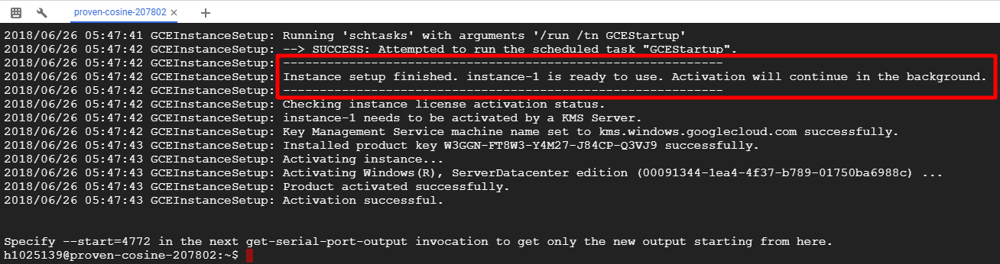
OS 初始化成功後，點擊 VM 右邊的遠端桌面通訊協定旁的 ▼ ，在點擊設定 Windows 密碼
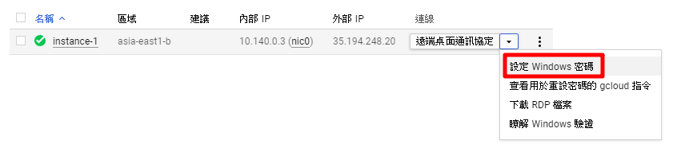
設定使用者名稱 ( 名稱預設是帳號 )
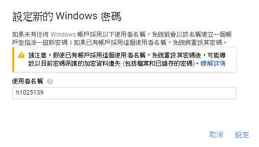
複製密碼
如果名稱設定一樣，下一台取得密碼會連同上一台一起更改
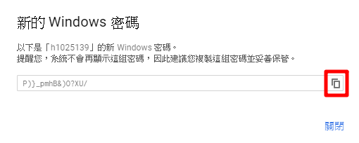
接下來直接點擊遠端桌面通訊協定
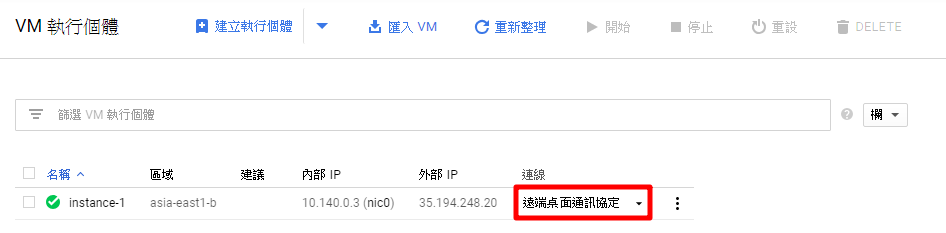
將會開啟新瀏覽器，輸入使用者名稱跟剛剛複製的密碼就可以登入了
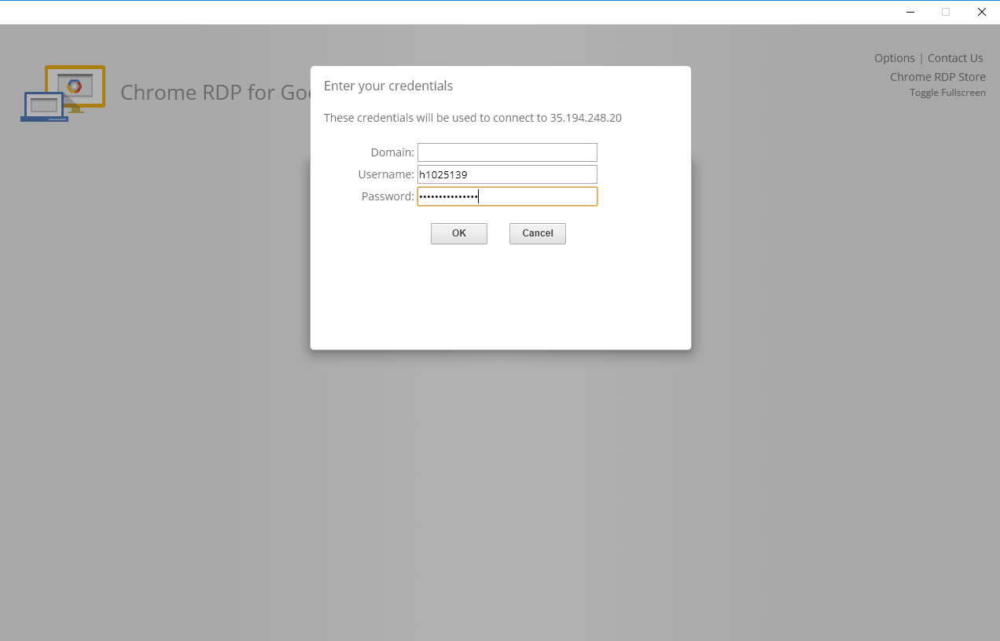
點擊繼續以確認您要連接
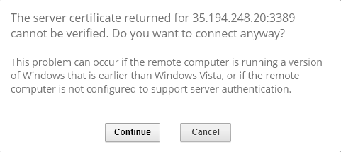
恭喜連線成功！
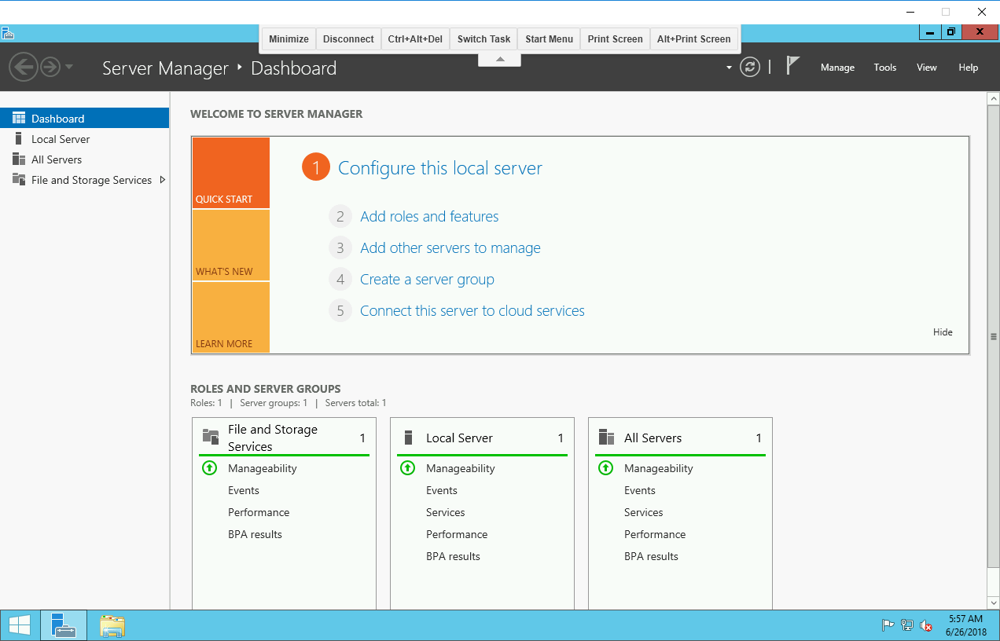
二、Windows 內建登入
打開搜尋輸入 mstsc 選擇遠端桌面連線
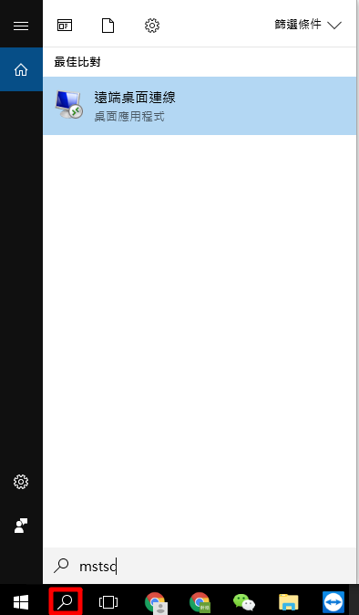
或是開始鍵 + R 輸入 mstsc
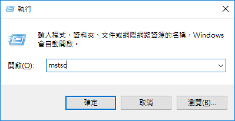
輸入欲登入 VM 外部 IP
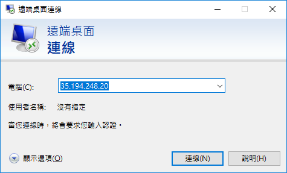
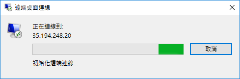
輸入設定好的使用者名稱跟密碼
取得使用者名稱跟密碼方式跟用 GCP 開啟新視窗連線一樣
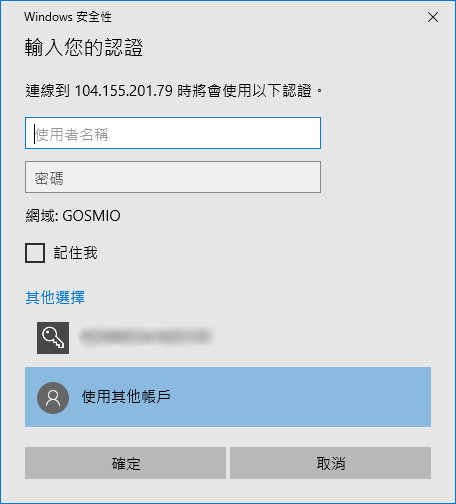
選擇是
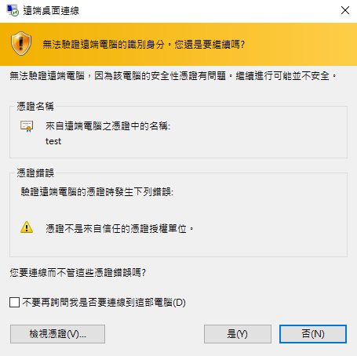
恭喜連線成功！
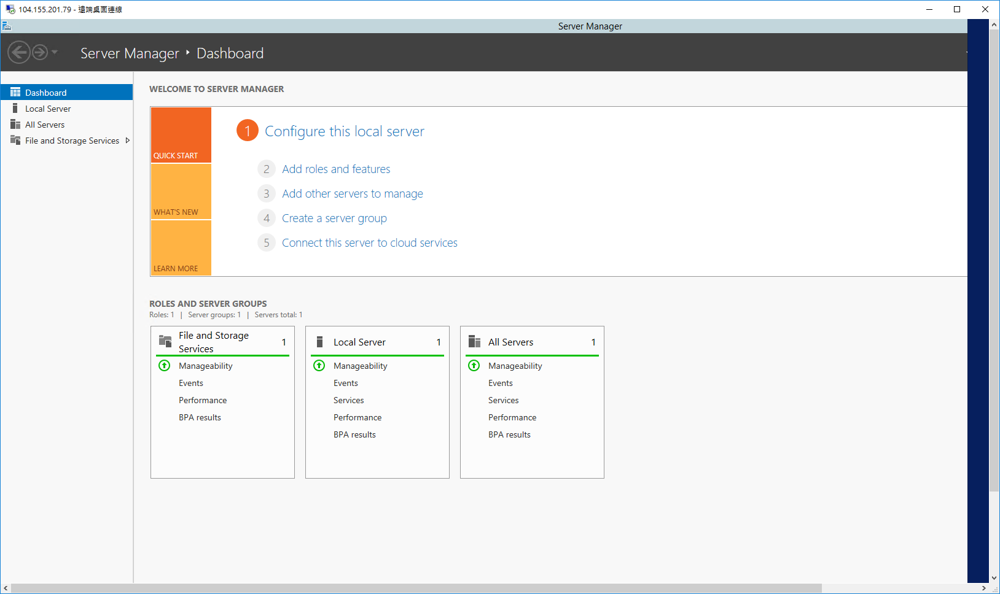
三、 使用 Remote Desktop Connection Manage - RDCMan 連線
Remote Desktop Connection Manage 是由微軟所開發的遠端桌面連線群組管理工具，透過該工具，可以將每個遠端連線以群組的方式進行歸類，同時開啟數個遠端連線，且該工具可將所有的設定以 RDG 檔案的方式，快速的移轉到裝有 Remote Desktop Connection Manage 的電腦上，可免除重複建立的麻煩
下載連結：https://www.microsoft.com/en-us/download/details.aspx?id=44989
Remote Desktop Connection Manage 安裝完成並開啟後，若已有先前建立的 RDG 檔案，可使用 File → Open 的方式導入，若無則點擊 File → New，並在後續出現的視窗中輸入新的檔案名稱後，點擊儲存，該新建動作會建立群組的根目錄
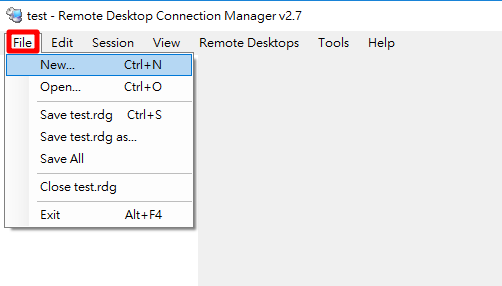
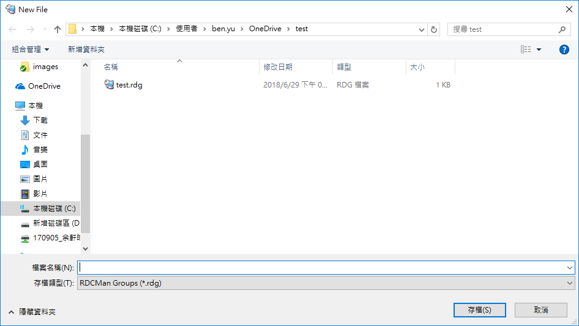
建立好根目錄後，便可加入遠端連線，可在根目錄名稱上點擊滑鼠右鍵，在其右鍵功能表上點擊 Add Server
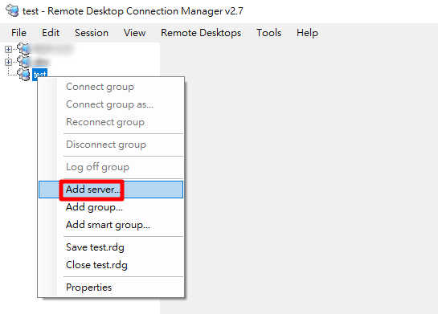
Add Server 後會出現設定視窗，在 Server Settings → Server name 輸入要連線 VM IP，輸入後下方 Display name 會跟著一起出現可以修改 ( 加入完後此名稱會顯示在左側，名稱是給自己看的 )
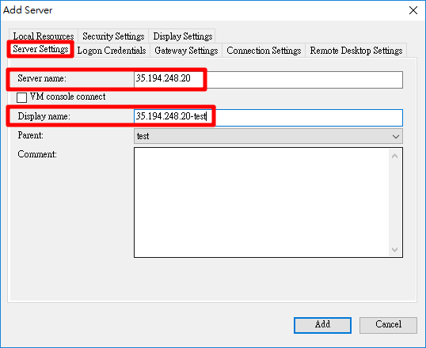
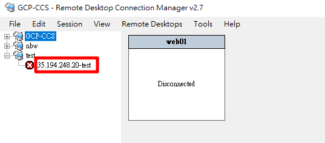
再來點選上面分頁 Logon Credentials 輸入使用者名稱跟密碼
取得使用者名稱跟密碼方式跟用 GCP 開啟新視窗連線一樣
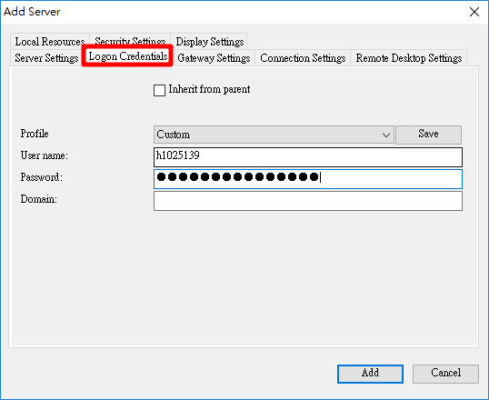
設定好後如果想要再做更改，可以右鍵選擇 Properties
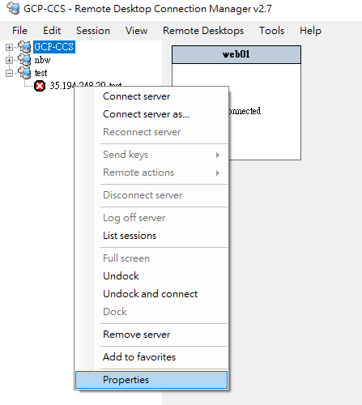
接下來連線進 VM 有 3 種方式
1. 對加入好的 VM 名稱點擊右鍵選擇 Connect Server
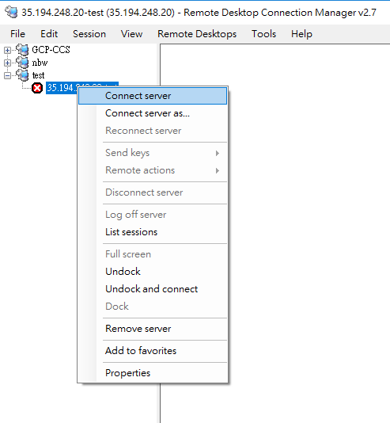
2. 點擊群組右邊會出現所有 VM，直接對需要的 VM 點擊 2 下
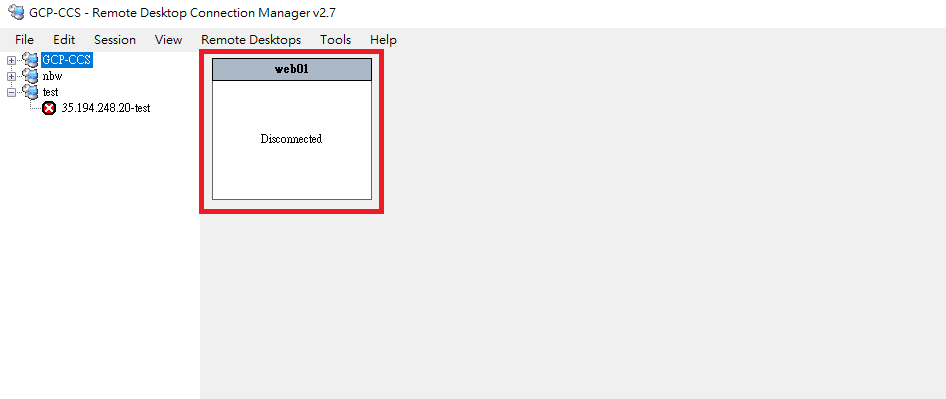
3. 直接點擊 VM 名稱 2 下
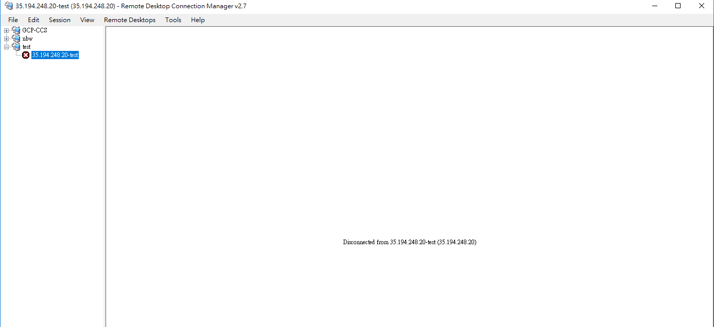
選擇是
恭喜連線成功！
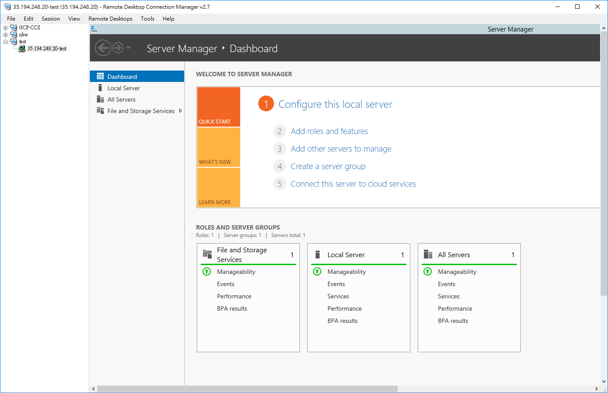